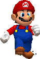
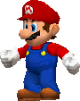

MaRSIo

Vous devez réaliser un programme qui remplit TOUTES ces conditions. Vous
pouvez rajouter d'autres fonctionnalités (autres bonus, autres types de
murs,...) mais cela ne doit pas se faire au détriment des fonctionnalités
demandées ci-dessous. Le projet est à faire en binôme et est à rendre au
plus tard lors de la dernière scéance de cours/TD.
Principe du jeu:
MaRSIo est un jeu avec une interface
graphique se jouant à 1 joueur. Le joueur dirige
un personnage, MaRSIo qui peut se déplacer, sauter, lancer des objets ou ramasser des objets. Le personnage doit atteindre la fin d'un niveau en le moins de temps possible, des monstres l'en empêche.
Niveau de jeu:
Un niveau est formé de cases carrées, formant le décor. Les éléments de décor forment des plateformes sur lesquelles peut sauter et se déplacer MaRSIo. Le décor est trop long pour être entièrement affiché à l'écran. La fenêtre de jeu sera centrée sur le personnage et le décor se déplacera lorsque le personnage ira dans une direction (scroll).
Les niveaux seront définis à partir de fichiers texte. Le format de ces
fichiers doit obligatoirement être le suivant: sur la premiere ligne, le
nombre de lignes et de colonnes du plateau, séparés par un espace, et le nombre de colonnnes visibles dans la fenêtre.
Ensuite en respectant le nombre de lignes et de colonnes donné, un tableau
de caractères définissant les cases du plateau:
- # de la terre
- ( un bord gauche de terre, ) pour la droite
- / une montée vers la droite, \ pour la gauche
- u un début de montée vers la droite, d pour la gauche
- x pour un sol dur, + pour un bonus
- @ la position initiale du joueur
- a,b,c: les positions initiales des monstres (de type différent)
- O: la fin du niveau
A la fin du niveau, on affichera le temps effectué par le joueur.
Bonus
Les bonus sont de 2 types au moins. L'un réduit le temps de traversée du niveau, l'autre permet au joueur de lancer un objet, une fois, vers un monstre. Le lancé est horizontal, au niveau du joueur.
Monstres
Les monstres éliminent un joueur lorsqu'ils le touche par le coté. Le personnage élimine un monstre lorsqu'il saute dessus ou lorsqu'il lui envoie un objet. On fera trois types de monstres différents:
- Un monstre sans caractéristiques spéciales
- Un monstre qui ne peut être éliminé qu'en lui lançant un objet
- Un monstre qui ne peut être éliminé qu'en lui sautant dessus
Le déplacement des monstres est aléatoire, mais ils ne tombent pas des plateformes sur lesquelles ils sont.
Autres améliorations
On pourra améliorer le jeu en proposant les fonctionnalités suivantes. Ces fonctionnalités permetteront d'obtenir des points supplémentaires sur le projet.
- Jeu en réseau pour 2 joueurs: les joueurs sont en compétition pour parvenir le plus vite possible à la sortie du niveau, ou bien les joueurs sont en mode collaboratif.
- Des bonus différents: on pourra par exemple faire un bonus qui fait aller plus vite le personnage, qui le fait bondir, ou qui lui donne une vie supplémentaire
- Animations des personnages: on pourra faire une animation plus fine des personnages en utilisant les feuilles de sprites fournies par exemple, en animant le décor.
- High score: on pourra afficher les meilleurs temps réalisés.
- Davantage de variété dans les monstres: des monstres qui ne bougent pas, des monstres qui se déplacent plus vite, ...